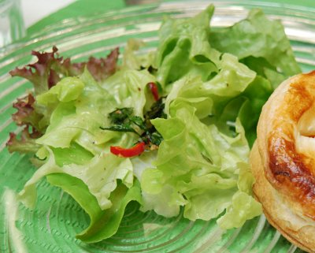

| Zutaten für 4 Personen: | |
| 1/2 Stück | Eichblattsalat oder Schnittsalat |
| Krausesalat | |
| 1 | Knoblauchzehe |
| 1/2 Bund | glatter Peterli |
| Pfefferminzblätter | |
| Olivenöl | |
| 1/2 | Zitrone |
| Salz | |
| Pfeffer | |
Den Eichblatt- oder Schnittsalat waschen, in der Salatschleuder trocknen und in mundgerechte Stücke zupfen.
Den Krausesalat ganz lassen, waschen und ebenfalls in der Salatschleuder trocknen. Nur den unteren Viertel nahe beim Stielansatz abschneiden.
Eine Handvoll Eichblattsalat mit zwei Krausesalatblättern trichterförmig umwickeln.
Auf Salatteller stellen. Diesen Vorgang für weitere 3 Salatteller wiederholen.
Pikante Gewürzmischung:
Die Knoblauchzehe fein schneiden.
Den Peperoncino der Länge nach halbieren, entkernen und fein schneiden.
Den Peterli und die Pfefferminze fein schneiden.
Wenig Olivenöl in einer Bratpfanne erhitzen. Knoblauch, Peperoncino, Peterli und Minze darin dünsten.
Vollständig auskühlen lassen und dann auf die Salatsträusse verteilen.
Salatsauce:
Zitronensaft von der halben Zitrone, Senf, Salz, Pfeffer mit 4 El Olivenöl zu einer Salatsauce verrühren.
Die Salatsauce kurz vor dem Servieren auf dem Salat verteilen.
Passt zu den Kürbispastetchen
Kürbiskochkurs von Patricia Krummenacher am 25.9.2009.
Hat ausgezeichnet geschmeckt. RE 25.9.2009